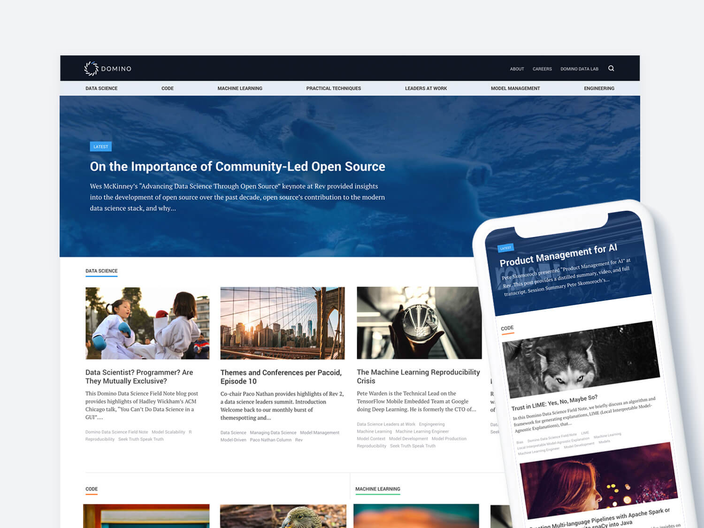
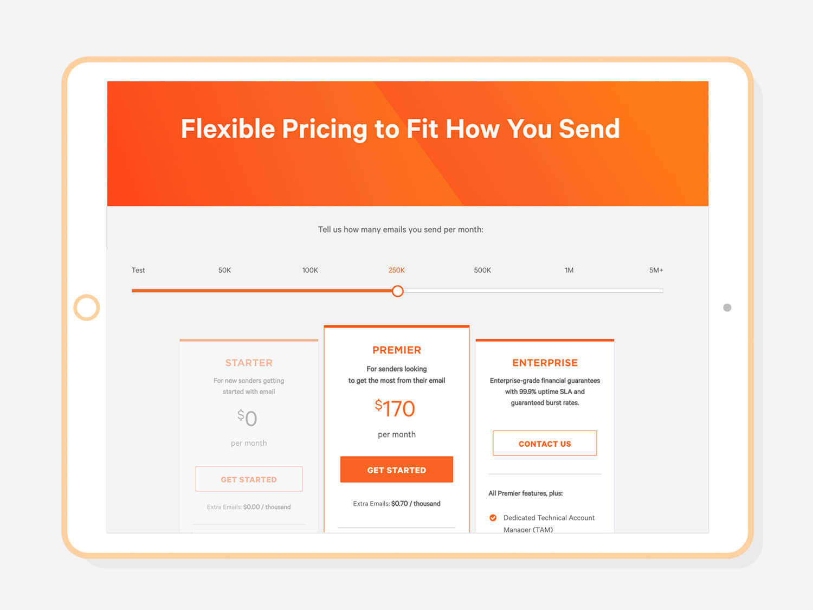

Domino Data Science Blog
Custom web design and Wordpress development for leading data science enterprise, Domino Data Lab.
Tools:
GIT (
Repo
), Wordpress, SASS, Javascript, Marketo, Bootstrap
SparkPost
Custom design and web implementation for certian pages for this popular email delivery service.
Tools:
GIT (
Repo
), NPM, Wordpress, Virtual Composer, Javascript, Marketo

Skateistan
Graphic design for NGO Skateistan, an organization that empowers youth in developing countries through skateboarding.
Tools:
InDesign, Photoshop, Sketch
Hue and Cry
Custom web design and development for true crime blog, Hue and Cry that focuses on victims of unsolved crimes.
Tools:
Git (
Repo
), NPM, Gulp, SASS (BEM), Wordpress
Data Science Pop-up
Event website development and design for Data Science Pop-up, a event hosted in various cities that brings together like minded data scientists and leaders.
Tools:
GIT (
Repo
) Advanced Custom Fields, Wordpress, SASS, Javascript, Eventbrite